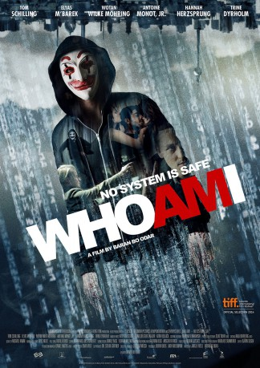

#880 WhoAmI
Alternativ: Who Am I - Kein System ist sicher
 gesehen am 06.05.2015
gesehen am 06.05.2015
 
 IMDB-Wertung: 7.6 / 10
IMDB-Wertung: 7.6 / 10  Metascore: 0
Metascore: 0 
Benjamin, a young German computer whiz, is invited to join a subversive hacker group that wants to be noticed on the world's stage.
Jahr: 2014
Dauer: 102 Minuten
FSK: 12
Land: Deutschland Studio: Sony Pictures ReleasingTonspuren:
Untertitel:
Auflösung: 1080p (1920x808) Größe: 4618 MB
Genre: Krimi, Drama, Mystery, Sci-Fi, Thriller
Regisseur: Baran bo Odar
Drehbuch: Jantje Friese, Baran bo Odar
Soundtrack: Michael Kamm
Darsteller:
 Tom Schilling als Benjamin
Tom Schilling als Benjamin Elyas M'Barek als Max
Elyas M'Barek als Max Antoine Monot Jr. als Paul
Antoine Monot Jr. als Paul Hannah Herzsprung als Marie
Hannah Herzsprung als Marie Stephan Kampwirth als Martin Bohmer
Stephan Kampwirth als Martin Bohmer Trine Dyrholm als Hanne Lindberg
Trine Dyrholm als Hanne Lindberg Arndt Schwering-Sohnrey als Paradise Pizza Manager
Arndt Schwering-Sohnrey als Paradise Pizza Manager- Lena Dörrie als BKA Ermittlerin #1
- Mike Davies als Europolsicherheitsmann
- Katja Wagner als Börsennachrichten
- Tobias Hey als Bühnentechniker
 Wotan Wilke Möhring als Stephan
Wotan Wilke Möhring als Stephan- Leopold Hornung als Oskar
- Katharina Matz als Hilde Engel
- Leonard Carow als MRX
- Matthias Neukirch als Dr. Arnow
- Nils Borghardt als Glatze NBD
- Alexander Hauff als Karl-Heinz Vogt
- Antonia Putiloff als BKA Hackerin
- Max Hopp als BND IT-Techniker
- Bjoern Susen als Richter
- Eric Bouwer als Kassierer
- Levi Strasser als Benjamin 8 J.
- Moritz Berkel als Benjamin 14 J.
- Tijan Fischer als Marie 15 J.
- Marten Borgwardt als Krypton
- Barbara Hahlweg als ZDF Heute Moderatorin
- Marc Bator als SAT1 Nachrichten Moderator
- Stephanie Puls als N24 Nachrichten Moderatorin
- Harald Geil als BKA Mitarbeiter
- Jessica Walther-Gabory als BKA-Ermittlerin #2
- Teresa Cantz als Kunstlehrerin
- Sara Bernhardt als Freundin von Marie #1
- Sophia Fichtner als Freundin von Marie #2
- Johannes H. Langner als Freund von Oskar #1
- John Ludwig als Freund von Oskar #2
 David Masterson als Cyber Mafia Mann Tattoo
David Masterson als Cyber Mafia Mann Tattoo- Agnes Thi-Mai als Partymädchen #1
- Rosa Schrehardt als Partymädchen #2
- Alica Hubiak als Partymädchen #3
- Marko Passehl als Schläger NBD
- Thomas Gerber als Sportlehrer 1996
- Franz Wilking als Stephan als Kind
- Walid Obeidi als Klassenkamerad #1
- Jaron Wilhelm als Klassenkamerad #2
- Matthias Berndt als Sicherheitsmann
- Alexander Voigt als Party Gast
- Carmen Goesch als Gerdi vom BND
- Wolfgang Rhaden als Gerichtsmediziner
- Michael Vesper als BND Agent
Datei: X:\2014(N-Z)\WhoAmI (2014, FSK12, 1920x808).mkv seit 10.04.2015
Festplatte: HD 2013(I-Z)-2014(A-Z)
 Es gibt insgesamt 163 Filme in der Gruppe '2014(N-Z)'
Es gibt insgesamt 163 Filme in der Gruppe '2014(N-Z)'